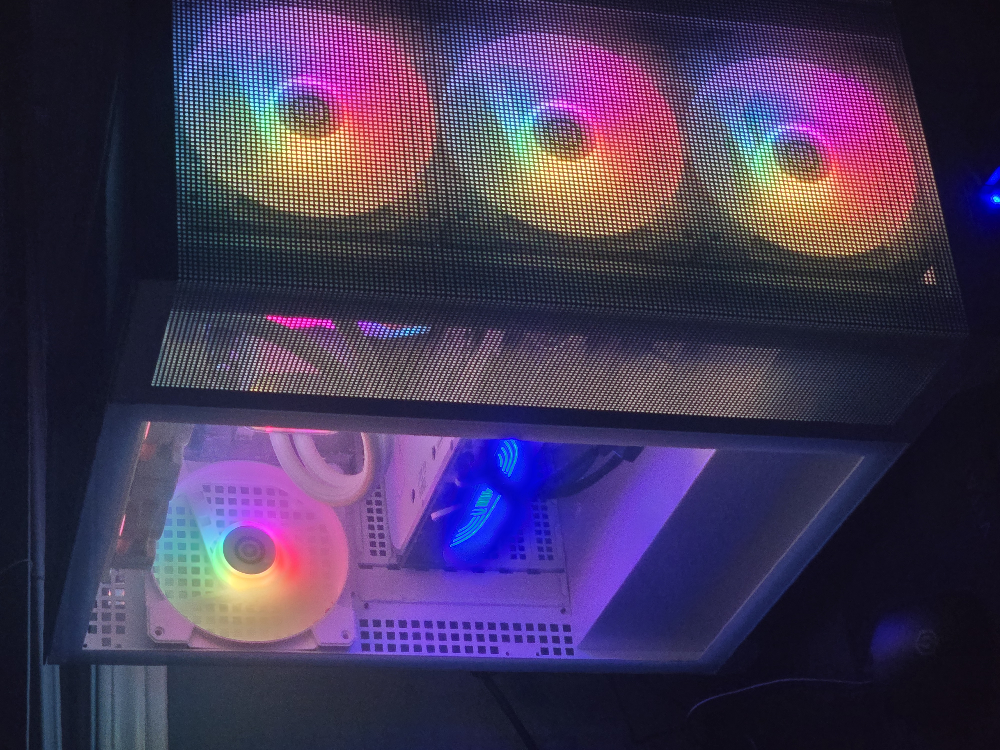

Piano

I have been playing piano ever since I was in 8th grade. Just over a year ago, I have decided to take professional lessons. I wish to become the best I could be and am motivated to keep progressing through this journey. I enjoy playing a wide range of music genres but my favourite include music from video games such as the songs heard in Final Fantasy.
Computer Programming
I am enrolled in the Computer Programming program at Georgian College and am very passionate about my future career in programming. I know a wide variety of languages such as C#, Java, JavaScript, Html, React, CSS, Python, and PHP.